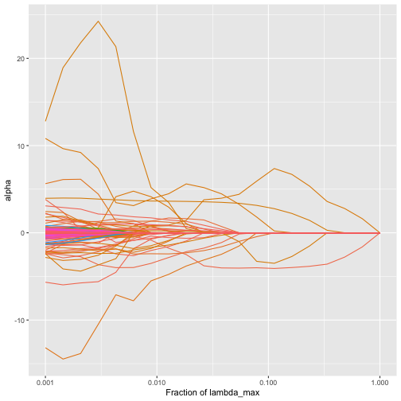

trac-m2 for regression: a second stage and additional covariates
Source:vignettes/trac-m2-regression.Rmd
trac-m2-regression.RmdHere we extend a trac regression model with additional
non-compositional covariates, and a second stage that expresses the
model in terms of pairwise log-ratios. The model with covariates is
called trac-m, the model with a second stage trac-2, and the model with
both trac-m2. We use the Central Park Soil data set, one of the examples
in the trac
paper, which is included in the trac package as
cps_moisture. The task is to predict the moisture of soil
samples from their bacterial composition and from five other soil
properties. For more on this data set, see ?cps_moisture,
and for the basics of trac, see Using trac to build
tree-aggregated predictive models.
The cps_moisture object has the same elements as the
sCD14 object of the basic vignette, plus a data frame of
covariates:
The leaves of the tree are bacterial families. The data frame
covariates contains the soil pH, total carbon (C), total
nitrogen (N), their ratio (CN) and CO2_C for the same samples.
Train-test split and preprocessing
We take 2/3 of the observations for training and take the log of the feature matrix.
Prepare the additional covariates
We preprocess the additional covaraites, using the training set only.
C, N and CN are missing for a few
samples, and we replace those values by the median of the training set.
Then we standardize all five covariates with the means and standard
deviations of the training set, so that their coefficients are on the
same scale.
covariates_tr <- cps_moisture$covariates[tr, ]
covariates_te <- cps_moisture$covariates[-tr, ]
# Median imputation
for (v in names(covariates_tr)) {
med <- median(covariates_tr[[v]], na.rm = TRUE)
covariates_tr[[v]][is.na(covariates_tr[[v]])] <- med
covariates_te[[v]][is.na(covariates_te[[v]])] <- med
}
# Standardize the metadata
means <- colMeans(covariates_tr)
sds <- apply(covariates_tr, 2, sd)
covariates_tr <- as.data.frame(scale(covariates_tr, center = means, scale = sds))
covariates_te <- as.data.frame(scale(covariates_te, center = means, scale = sds))trac without the covariates
As a reference, we first fit trac on the microbiome
alone and choose the tuning parameter with the 1SE rule.
fit <- trac(ztr, ytr, A = cps_moisture$A, min_frac = 1e-3, nlam = 20)
cvfit <- cv_trac(fit, Z = ztr, y = ytr, A = cps_moisture$A)
#> fold 1
#> fold 2
#> fold 3
#> fold 4
#> fold 5
show_nonzeros <- function(x) x[x != 0]
show_nonzeros(fit[[1]]$alpha[, cvfit$cv[[1]]$i1se])
#> 'Life::k__Bacteria::p__Planctomycetes' 'Life::k__Bacteria::p__Actinobacteria'
#> -1.1148554 -3.5783629
#> 'Life::k__Bacteria::p__Gemmatimonadetes::c__Gemmatimonadetes' 'Life::k__Bacteria::p__Acidobacteria::c__DA052::o__Ellin6513'
#> -1.8748086 0.7472584
#> 'Life::k__Bacteria::p__Proteobacteria::c__Deltaproteobacteria' 'Life::k__Bacteria::p__Proteobacteria::c__Betaproteobacteria'
#> 0.2088524 -0.2746696
#> 'Life::k__Bacteria::p__Proteobacteria' 'Life::k__Bacteria'
#> 10.9996566 -5.1130709
yhat_te <- predict_trac(fit, new_Z = zte)
testerr <- colMeans((yhat_te[[1]] - yte)^2)
nnz <- colSums(fit[[1]]$alpha != 0)Additional covariates (trac-m)
trac can include non-compositional covariates in the
model. They enter as ordinary linear terms, they are not part of the
zero-sum constraint, and their penalty weights are set with
w_additional_covariates. Smaller weights let the covariates
enter the model more easily. Here we use 0.1, as in the trac-m
paper.
fit_cov <- trac(ztr, ytr, A = cps_moisture$A,
additional_covariates = covariates_tr,
w_additional_covariates = rep(0.1, ncol(covariates_tr)),
min_frac = 1e-3, nlam = 20)
plot_trac_path(fit_cov)
The covariates are also be passed to cv_trac. We use the
same folds as for trac above, so that both models are tuned
on the same folds:
cvfit_cov <- cv_trac(fit_cov, Z = ztr, y = ytr, A = cps_moisture$A,
additional_covariates = covariates_tr,
folds = cvfit$folds)
#> fold 1
#> fold 2
#> fold 3
#> fold 4
#> fold 5
alpha_cov <- fit_cov[[1]]$alpha[, cvfit_cov$cv[[1]]$i1se]
show_nonzeros(alpha_cov)
#> 'Life::k__Bacteria::p__Planctomycetes'
#> -3.808249e+00
#> 'Life::k__Bacteria::p__Chloroflexi'
#> 1.621437e+00
#> 'Life::k__Bacteria::p__Bacteroidetes::c__Sphingobacteriia::o__Sphingobacteriales'
#> -2.166424e+00
#> 'Life::k__Bacteria::p__Actinobacteria::c__Acidimicrobiia::o__Acidimicrobiales'
#> -9.351910e-01
#> 'Life::k__Bacteria::p__Actinobacteria'
#> -2.496415e+00
#> 'Life::k__Bacteria::p__WPS-2'
#> -1.037743e+00
#> 'Life::k__Bacteria::p__Gemmatimonadetes::c__Gemm-1'
#> 9.874737e-01
#> 'Life::k__Bacteria::p__Gemmatimonadetes::c__Gemmatimonadetes'
#> -2.296933e+00
#> 'Life::k__Bacteria::p__Firmicutes::c__Bacilli::o__Bacillales'
#> 2.834938e-01
#> 'Life::k__Bacteria::p__Acidobacteria::c__DA052::o__Ellin6513'
#> 1.306183e+00
#> 'Life::k__Bacteria::p__Acidobacteria::c__Acidobacteria-6::o__iii1-15'
#> -6.294894e-01
#> 'Life::k__Bacteria::p__Proteobacteria::c__Deltaproteobacteria::o__Myxococcales'
#> 1.061618e+00
#> 'Life::k__Bacteria::p__Proteobacteria::c__Deltaproteobacteria'
#> 5.606105e+00
#> 'Life::k__Bacteria::p__Proteobacteria::c__Betaproteobacteria::o__MND1'
#> -1.287160e-01
#> 'Life::k__Bacteria::p__Proteobacteria::c__Betaproteobacteria'
#> -1.463673e-17
#> 'Life::k__Bacteria::p__Proteobacteria::c__Gammaproteobacteria'
#> 7.236805e-01
#> 'Life::k__Bacteria::p__Proteobacteria'
#> 1.427215e+00
#> 'Life::k__Bacteria'
#> 4.819548e-01
#> pH
#> 6.816645e-01
#> C
#> 3.599087e+00
#> N
#> 2.981095e-01
#> CO2_C
#> 1.801297e-01The coefficients of the covariates come after those of the nodes. Since we standardized the covariates, each of these coefficients is the change in predicted moisture per standard deviation of that soil property.
To make predictions:
yhat_te_cov <- predict_trac(fit_cov, new_Z = zte,
new_additional_covariates = covariates_te)
testerr_cov <- colMeans((yhat_te_cov[[1]] - yte)^2)A second stage with covariates (trac-m2)
A second stage, in the spirit of the log-ratio lasso of Bates and
Tibshirani (2019), expresses the model in terms of pairwise log-ratios:
it forms all log-ratios between the taxa that trac selected
and runs a lasso on them, together with the covariates that
trac selected.
The names of the log-ratios are long, so we print the selected ones as a table, shortening each taxon to its last two ranks. The rows without a denominator are covariates.
options(knitr.kable.NA = "")
show_log_ratios <- function(log_ratios) {
nz <- show_nonzeros(log_ratios)
short <- function(x) {
x <- str_remove_all(x, "'")
as.character(ifelse(grepl("::", x), str_extract(x, "[^:]+::[^:]+$"), x))
}
parts <- str_split_fixed(names(nz), "///", 2)
tibble(numerator = short(parts[, 1]),
denominator = na_if(short(parts[, 2]), ""),
coefficient = unname(nz))
}
selected_covariates <- intersect(names(show_nonzeros(alpha_cov)), colnames(covariates_tr))
two_stage_cov <- second_stage(Z = ztr, A = cps_moisture$A, y = ytr, betas = alpha_cov,
additional_covariates =
covariates_tr[, selected_covariates, drop = FALSE],
w_additional = 0.1, method = "regr",
folds = cvfit$folds)
show_log_ratios(two_stage_cov$log_ratios) %>%
knitr::kable(digits = 2)| numerator | denominator | coefficient |
|---|---|---|
| k__Bacteria::p__Chloroflexi | c__Acidimicrobiia::o__Acidimicrobiales | 1.14 |
| c__Sphingobacteriia::o__Sphingobacteriales | p__Gemmatimonadetes::c__Gemm-1 | -0.15 |
| k__Bacteria::p__WPS-2 | c__DA052::o__Ellin6513 | -0.54 |
| p__Gemmatimonadetes::c__Gemm-1 | c__Acidobacteria-6::o__iii1-15 | 0.05 |
| c__Acidimicrobiia::o__Acidimicrobiales | c__Deltaproteobacteria::o__Myxococcales | -0.04 |
| p__Gemmatimonadetes::c__Gemmatimonadetes | c__Deltaproteobacteria::o__Myxococcales | -1.25 |
| k__Bacteria::p__Planctomycetes | p__Proteobacteria::c__Deltaproteobacteria | -1.69 |
| c__Acidimicrobiia::o__Acidimicrobiales | p__Proteobacteria::c__Deltaproteobacteria | -1.22 |
| c__Acidimicrobiia::o__Acidimicrobiales | p__Proteobacteria::c__Gammaproteobacteria | -0.46 |
| pH | 0.99 | |
| C | 3.78 | |
| N | 0.48 | |
| CO2_C | 0.26 |
Each log-ratio’s coefficient multiplies the log of the ratio of the
geometric means of the numerator and denominator taxa (the full names
are in two_stage_cov$index). A positive coefficient means
that a larger ratio of numerator to denominator predicts wetter
soil.
We make predictions on the test set with
predict_second_stage:
yhat_te_two_cov <- predict_second_stage(
new_Z = zte,
new_additional_covariates = covariates_te[, selected_covariates, drop = FALSE],
fit = two_stage_cov
)Without covariates, the same function gives a second stage for the
microbiome-only trac model above (trac-2):
two_stage <- second_stage(Z = ztr, A = cps_moisture$A, y = ytr,
betas = fit[[1]]$alpha[, cvfit$cv[[1]]$i1se],
method = "regr", folds = cvfit$folds)
yhat_te_two <- predict_second_stage(new_Z = zte, fit = two_stage)
show_log_ratios(two_stage$log_ratios) %>%
knitr::kable(digits = 2)| numerator | denominator | coefficient |
|---|---|---|
| k__Bacteria::p__Actinobacteria | p__Proteobacteria::c__Deltaproteobacteria | -0.84 |
| p__Gemmatimonadetes::c__Gemmatimonadetes | p__Proteobacteria::c__Deltaproteobacteria | -1.41 |
| p__Gemmatimonadetes::c__Gemmatimonadetes | k__Bacteria::p__Proteobacteria | -0.52 |
Comparing the models
Finally, we collect the test errors and the sizes of the models.
n_taxa_ratios <- function(two_stage) {
ratios <- names(show_nonzeros(two_stage$log_ratios))
ratios <- ratios[grepl("///", ratios)]
c(taxa = length(unique(unlist(strsplit(ratios, "///")))),
log_ratios = length(ratios))
}
n_cov <- function(two_stage) {
sum(names(show_nonzeros(two_stage$log_ratios)) %in% colnames(covariates_tr))
}
i1se <- cvfit$cv[[1]]$i1se
i1se_cov <- cvfit_cov$cv[[1]]$i1se
fit_lm <- lm(ytr ~ ., data = covariates_tr)
testerr_mean <- mean((mean(ytr) - yte)^2)
tibble(
model = c("trac", "trac-2", "covariates only (linear model)", "trac-m", "trac-m2",
"training mean"),
taxa = c(nnz[i1se], n_taxa_ratios(two_stage)["taxa"], 0,
sum(fit_cov[[1]]$alpha[seq_len(ncol(cps_moisture$A)), i1se_cov] != 0),
n_taxa_ratios(two_stage_cov)["taxa"], 0),
log_ratios = c(NA, n_taxa_ratios(two_stage)["log_ratios"], NA, NA,
n_taxa_ratios(two_stage_cov)["log_ratios"], NA),
covariates = c(0, 0, ncol(covariates_tr), length(selected_covariates),
n_cov(two_stage_cov), 0),
test_error = c(testerr[i1se], mean((yhat_te_two - yte)^2),
mean((predict(fit_lm, newdata = covariates_te) - yte)^2),
testerr_cov[i1se_cov], mean((yhat_te_two_cov - yte)^2), testerr_mean)
) %>%
mutate(r_squared = 1 - test_error / testerr_mean) %>%
knitr::kable(digits = c(0, 0, 0, 0, 1, 2))| model | taxa | log_ratios | covariates | test_error | r_squared |
|---|---|---|---|---|---|
| trac | 8 | 0 | 42.6 | 0.09 | |
| trac-2 | 4 | 3 | 0 | 44.2 | 0.05 |
| covariates only (linear model) | 0 | 5 | 32.9 | 0.29 | |
| trac-m | 18 | 4 | 29.3 | 0.37 | |
| trac-m2 | 12 | 9 | 4 | 29.8 | 0.36 |
| training mean | 0 | 0 | 46.7 | 0.00 |
The microbiome alone predicts soil moisture poorly, and the soil properties alone predict it moderately. Together, they predict it better than either. The second stage keeps most of this accuracy with a model written in terms of a few log-ratios and covariates.